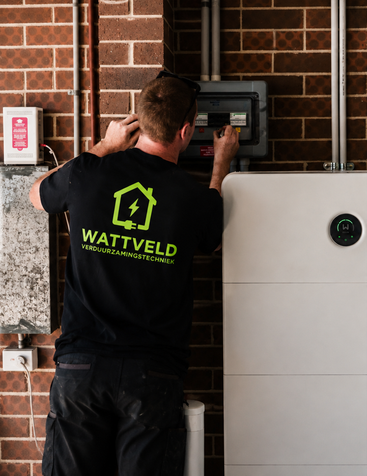
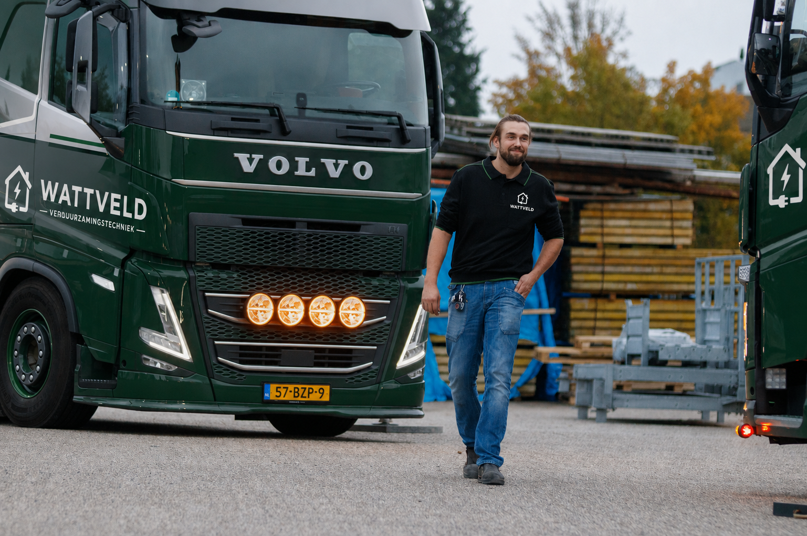

Quadfoam
SpuitisolatieIsolatieschuim dat ter plekke tegen het dakbeschot en de gordingen wordt gespoten. Het vult elke naad en kier en vormt één naadloze, luchtdichte laag.
Wattveld isoleert uw woning van dak tot kruipruimte. Met ons eigen team, eerlijk advies over wat écht rendeert, en hulp bij uw subsidieaanvraag.
Elke woning is anders. Daarom kijken we eerst wat uw huis nodig heeft en kiezen we pas daarna het materiaal. Zo betaalt u alleen voor maatregelen die echt iets opleveren.
Een warmere zolder en minder warmteverlies via het dak, met Quadfoam, PIF of cellulose.
Meer over dakisolatieDe spouw volgeblazen met Knauf inblaaswol of EPS-parels, zonder werk aan de binnenkant.
Meer over spouwmuurisolatieEen droge, warme kruipruimte met een deken van EPS-parels of EPS-isolatiechips.
Meer over bodemisolatieGeen koude voeten meer: isolatie direct onder de vloer met Quadfoam of PIF.
Meer over vloerisolatieHR++ of triple glas voor comfort tot aan het raam en minder tocht en condens.
Meer over isolatieglasHeeft u zonnepanelen? Sla uw eigen stroom op en gebruik hem wanneer u hem nodig heeft.
Meer over de thuisbatterijWarmte stijgt op, dus een ongeïsoleerd dak is een van de grootste bronnen van warmteverlies. Wij isoleren schuine daken aan de binnenzijde, zonder dat de pannen eraf hoeven. Uw zolder wordt zo een comfortabele ruimte: warm in de winter en koeler in de zomer.
Isolatieschuim dat ter plekke tegen het dakbeschot en de gordingen wordt gespoten. Het vult elke naad en kier en vormt één naadloze, luchtdichte laag.
Lichte, flexibele isolatie van luchtkamers en reflecterende folielagen. Stofvrij te verwerken en strak af te werken met beplating.
Vlokken van gerecycled papier, ingeblazen in een gesloten dakconstructie. Vochtregulerend en een goede bescherming tegen zomerhitte.
Veel woningen hebben een buitenmuur met een holle ruimte, de spouw, die niet of nauwelijks geïsoleerd is. Wij controleren eerst of uw spouw geschikt is. Daarna boren we kleine gaatjes in de voegen, blazen de spouw vol en werken de gaatjes netjes af in de kleur van uw voegwerk.
Waterafstotende glaswolvlokken die de spouw volledig en gelijkmatig opvullen. Dampopen, onbrandbaar en geluiddempend.
Kleine bolletjes polystyreen met een bindmiddel. Ze vloeien goed door, ook in smalle of onregelmatige spouwen, en nemen geen water op.
Is uw kruipruimte te laag om onder de vloer te werken? Dan isoleren we de bodem. Via het kruipluik blazen we een dikke laag isolatiemateriaal over de hele bodem van de kruipruimte. Daardoor stijgen er minder kou en vocht op naar uw vloer.
Fijne korreltjes die zich als een gesloten deken over de bodem verdelen, ook in hoeken en rondom funderingsbalken.
Grovere snippers die snel een flinke isolatiedikte opbouwen. Voordelig bij grotere kruipruimtes. Rot en schimmelt niet.
We isoleren de onderkant van uw begane grondvloer vanuit de kruipruimte. Het resultaat: een warmere vloer, minder tocht langs de plinten en een comfortabelere benedenverdieping.
Rechtstreeks tegen de onderkant van houten of betonnen vloeren gespoten. Sluit in één keer alle naden en kieren af, ook rondom leidingen.
Banen reflecterende isolatie, strak onder de vloer bevestigd. Schoon, stofvrij en licht om mee te werken in de kruipruimte.
Enkel glas of oud dubbel glas laat veel warmte ontsnappen en zorgt voor koude plekken en condens bij het raam. Wij vervangen het door hoogwaardig isolatieglas en controleren vooraf of uw kozijnen geschikt zijn.
Dubbel glas met een warmtereflecterende coating en een spouw gevuld met edelgas. Past vaak in uw bestaande kozijnen.
Drie glasbladen en twee gevulde spouwen voor de hoogste isolatiewaarde. Dikker en zwaarder, daarom vaak in combinatie met een nieuw kozijn.
U heeft één aanspreekpunt en weet vooraf precies wat u krijgt, wat het kost en hoeveel subsidie u terugkrijgt.
We komen bij u langs en bekijken dak, gevel, vloer, kruipruimte en ramen. U hoort direct wat er mogelijk is.
U ontvangt een duidelijke offerte met de gekozen materialen, de prijs en een berekening van uw subsidie.
Onze eigen monteurs voeren het werk netjes en volgens planning uit. Geen onderaannemers.
We leveren alle gegevens aan voor uw ISDE-aanvraag en blijven aanspreekbaar na de oplevering.
Met subsidie, een verlaagd btw-tarief en gunstige leningen wordt isoleren voor veel huiseigenaren goed betaalbaar. Wij helpen u om alles eruit te halen.
Een vast bedrag per m² voor elke isolatiemaatregel, aan te vragen bij RVO. Combineert u twee maatregelen binnen 24 maanden, dan verdubbelt het bedrag.
Tot 2× subsidieIs uw woning ouder dan 2 jaar? Dan betaalt u over de arbeidskosten voor isoleren 9% btw in plaats van 21%. Over materialen geldt 21%.
9% in plaats van 21%Via het Nationaal Warmtefonds leent u voordelig voor isolatie. Bij een verzamelinkomen tot € 60.000 is de rente 0%. U hoeft de subsidie dan niet voor te schieten.
0% rente mogelijkVeel gemeenten bieden extra subsidie of een duurzaamheidslening. We zoeken graag voor u uit wat er op uw adres mogelijk is.
Wij checken het voor uSubsidie per m² voor eigenaar-bewoners, bij één maatregel en bij twee of meer maatregelen.
| Maatregel | 1 maatregel | 2+ maatregelen | Oppervlak |
|---|---|---|---|
| Dakisolatie | € 16,25 | € 32,50 | 20 – 200 m² |
| Spouwmuurisolatie | € 5,25 | € 10,50 | 10 – 170 m² |
| Vloerisolatie | € 5,50 | € 11,00 | 20 – 130 m² |
| Bodemisolatie | € 3,00 | € 6,00 | 20 – 130 m² |
| HR++ glas | € 25 | € 50 | 3 – 45 m² |
| Triple glas + kozijn | € 111 | € 222 | 3 – 45 m² |
Vink de maatregelen aan en vul het aantal m² in voor een indicatie.
Indicatie op basis van de ISDE-bedragen 2026 van RVO. Het werkelijke bedrag hangt af van het gebruikte materiaal, de exacte oppervlakte en de voorwaarden op het moment van aanvragen.

Heeft u zonnepanelen? Met een thuisbatterij slaat u de stroom die u overdag opwekt zelf op. Zo gebruikt u hem 's avonds en 's nachts, in plaats van hem voor een lage vergoeding terug te leveren aan het net.
Wattveld Verduurzamingstechniek helpt huiseigenaren in heel Nederland aan een comfortabeler en zuiniger huis. We combineren vakkennis van isolatie met actuele kennis van subsidies, zodat elk voorstel niet alleen op papier klopt, maar ook in de praktijk. U weet altijd wie er voor de deur staat: ons eigen team.
Geen onderaannemers, één aanspreekpunt.
Alleen maatregelen die echt renderen.
We helpen u met de aanvraag.
Op materiaal én werkzaamheden.

Tijdens een gratis adviesgesprek bekijken we uw dak, gevel, vloer, kruipruimte en ramen. Op basis daarvan adviseren we welke maatregelen het meeste opleveren en in welke volgorde u ze het beste kunt uitvoeren.
Dat hangt af van de maatregel, het materiaal en het aantal vierkante meters. U ontvangt altijd een vrijblijvende offerte op maat, inclusief een berekening van de subsidie waar u recht op heeft.
Via de ISDE krijgt u een vast bedrag per m², dat verdubbelt als u twee of meer isolatiemaatregelen combineert binnen 24 maanden. Gebruik de subsidiecalculator op deze pagina voor een eerste indicatie.
Ja. Volgens de ISDE-voorwaarden kunt u voor beide subsidie krijgen, mits het oppervlak samen minimaal 20 m² is en u ze in dezelfde aanvraag meeneemt. We adviseren u graag over de beste combinatie voor uw kruipruimte.
Spouwmuur-, vloer- en bodemisolatie zijn vaak binnen één dag klaar. Dakisolatie en het vervangen van glas hangen af van de omvang. In de offerte staat een duidelijke planning.
Meestal valt het mee. Bij spouwmuurisolatie werken we aan de buitenkant, en bij vloer- en bodemisolatie hebben we alleen toegang tot het kruipluik nodig. Bij dakisolatie zorgen we dat de zolder netjes wordt achtergelaten.
Ja, u krijgt garantie op zowel het materiaal als de werkzaamheden. De precieze voorwaarden staan in uw offerte.
Laat uw gegevens achter of neem direct contact op. We nemen binnen één werkdag contact met u op om een afspraak te maken.
+31 6 84848383 info@wattveld.nl